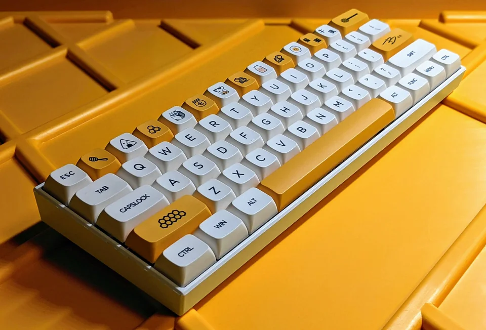

Кейкапы
Кейкапы являются своеобразным лицом любой клавиатуры. На них приходится больше 80% визуальной составляющей любой клавиатуры, вне зависимости от её размера
Существует множество видов кейкапов, и они различаются по самым разным признакам - расцветкам, форме, материалам и иногда даже размерам
Материалы
ABS
ABS (Акрилонитрил бутадиен стирол) - самый частый материал для производства что кейкапов, что кейсов. Отличается низкой ценой, мягкой, но прочной структурой, редко ломаются, но довольно быстро теряют цвет, особенно если изначально были белыми
ABS кейкапы имеют лишь одну неприятную особенность - традиционные средства для чистки (Изопропиловый спирт, посудомоечные средства) имеют свойство разъедать поверхность кейкапа и оставлять следы
PBT
PBT (Полибутилен Терефталат) - второй по распространённости материал для производства кейкапов. Твёрдый, имеет пескоподобную текстуру, не теряет цвет, однако относительно хрупкий материал, который из-за своей более высокой стоимости применяется реже
POM
POM (Полиоксиметилен) - материал, имеющий высокую стойкость против истирания, измывания поверхности и низкий уровень трения. Сейчас используется редко, раньше применялся компаниями Keycool и Cherry, сейчас чаще используется для наполнения "вырезов" под буквы
PC
PC (Поликарбонат) - материал, чаще всего используемый для полупрозрачных клавиш
Профили
Профиль кейкапа - это сочетание их размеров и форм. Помимо этого, профиль кейкапа влияет на то, как он будет звучать при полном нажатии на клавишу. Изображение ниже показывает большинство традиционных профилей для кейкапов различных клавиатур, включая мембранные
Артизаны
Артизанами (Artisan, буквально - ремесленник) называют такие кейкапы, которые делаются людьми вручную. Они бывают в огромном количестве форм, размеров и материалов, так как большинство из них существует в единичном экземпляре
Кейсы
Если кейкапы - лицо клавиатуры, то кейс можно спокойно сравнить с телом. В кейсе хранятся все остальные части клавиатуры, а сами кейсы бывают в огромном количестве вариаций в зависимости от раскладки и материалов
Раскладки
Многие люди привыкли видеть клавиатуры в одном размере - с нампадом справа, рядом F1-F12 сверху, стрелками и другими клавишами. Однако абсолютному большинству не нужны все эти клавиши - функциональные клавиши по типу Page Up/Down используются редко, многие люди не используют нампад, а некоторым не нужны стрелки. Для таких случае придумали различные по размерам раскладки клавиатур, которые различаются по процентному соотношению относительно стандартных 104 клавиш
80%
80% (чаще называемая TKL от слова tenkeyless) - раскладка, у которой полностью отсутствует нампад. Является одной из самых популярных альтернативных раскладок из-за того, что она обеспечивает уменьшение размера клавиатуры без особых компромиссов
75%
75% - раскладка, которая использует тот же набор клавиш, что и 80%, при этом сдвигая их вместе для уменьшения используемого места

60%
60% - раскладка, которая помимо нампада убирает F-ряд и клавиши Home, Insert, Page Up и другие. Это - первая раскладка, для полного функционала которой необходимо иметь набор клавиш, имеющих альтернативные действия при нажатой клавише FN

Микроклавиатуры
Микроклавиатурами часто называют раскладки с 40% клавиш и менее. Для полноценного функционала они требуют большое количество настройки со стороны прошивки, ибо у них отсутствует большинство клавиш

Материалы
Свитчи
Если кейкапы это лицо клавиатуры, кейс - её тело, то свитчи - её мышцы. Свитчей бывает огромное разнообразие, и все они в чём-то уникальны - вес, ощущения, звучание. Из-за этого раскрыть все их разновидности очень сложно, так что статья ниже покажет в основном самые популярные из них
Линейные, кликающие и тактильные
Свитчи в основном делятся на три подвида: линейные, кликающие и тактильные. Каждый из них имеет небольшие, но довольно важные особенности
Тактильные
Тактильные переключатели являются наиболее популярными для печати текста и связанных с этим задач. Их главной особенностью является то, что у них есть так называемый "тактильный толчок" - при нажатии на такой переключатель ощущается некоторое количество сопротивления, которое делает нажатие ощутимым, из-за чего многие их и предпочитают.
Примеры звучания тактильных переключателей:
Линейные
Линейные переключатели появились в клавиатурах одними из первых. Название пошло из-за того, что они являются нетактильными - у них нет ощутимого отклика при нажатии, и обычно они являются не только самыми плавными, но и самыми тихими, что делает их хорошим выбором для домашнего пользования
Примеры звучания линейных переключателей:
Кликающие
Кликающие переключатели так названы из-за того, что у них есть явный и громкий клик при нажатии. Опыт печати с кликающими переключателями похож на старые печатные машинки, но они часто вызывают шутки о том, что любителей кликающих переключателей ненавидят все окружающие
Ниже приведена демонстрация возможных звуков переключателей